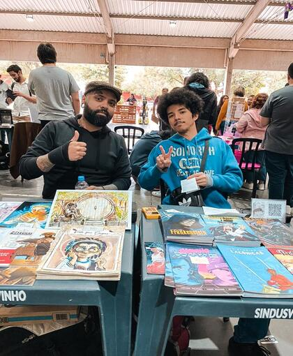
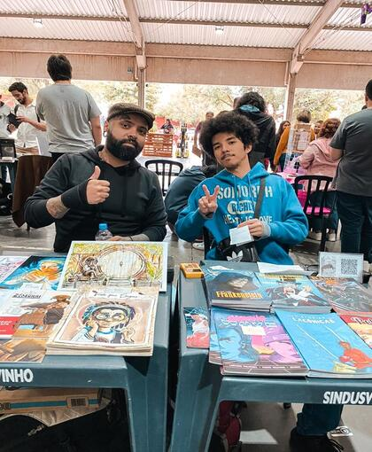

Fatec São Roque juntamente com a Prefeitura de São Roque promovem a Fatecon HQs 2023. Nos últimos dias 12 e 13 de maio, foi realizado no Recanto da Cascata (São Roque), a Fatecon HQ’s, um evento geek que reuniu mais de 80 artistas nacionais que expuseram suas obras ao público. Que 2023 veio com tudo pra ser o melhor ano a gente já sabe, o que só não imaginávamos que a segunda edição do Fatecon HQs ia ser um sucesso (na verdade sabíamos sim). O evento que surgiu em 2022 e idealizado por Rubens Menezes (docente da Fatec São Roque, reuniu nesta edição mais de 80 artistas nacionais, para expor suas obras ao público, nos dias 12 e 13 de maio. Criada para promover a cultura de quadrinhos e os cursos oferecidos na FATEC, a Fatecon vem crescendo e conquistando o público São Roquense, que vem desmistificando aquele tabu de que quadrinhos são para crianças. Essa cultura cresce a cada ano e vem conquistando a todos. Dividido em dois dias de evento contou com stands de quadrinhos, livros, pinturas dentre outras obras dos artistas, que estavam disponíveis para compras para quem tivesse interesse. No segundo dia tivemos o ilustre concurso de cosplay no qual o Bruno Siberi levou o 1º lugar com pyramid head de Silent Hill . No mesmo dia teve o concurso de desenho, “ Desenhe São Roque” onde a Emilly Yukari, retratou São Roques e suas maravilhas em um estilo único e próprio, evidenciando pontos turísticos da cidade. Agora que a Fatecon HQs faz parte do calendário oficial de eventos da cidade, mal posso esperar pelo próximo ano!
FATECon 2023
Artistas Participantes
Marina Bro
Lobo Loss
Bruno Weber

Israel Neto
Daniel Esteves
Al Stefano
Edelcio Ipanema
Cecilia Marins
Entrevistando Artistas
Marina Bro
Marina Bro sempre foi uma criança que foi encantada pelo desenho, porém, só começou a enxergar a arte como uma profissão a poucos anos atrás. Fez uma faculdade de arte logo após sua saída do ensino médio e começou a participar no ano de 2022, e assim começou a encarar a vida do artista autônomo vivendo atualmente de seus densenhos e quadrinhos! Sempre se inspirando nos quadrinhos que lia quando criança e ainda mais em amigos que conheceu na vida de quadrinista vendo como um incentivo e um motivo para continuar.
Karine
Karine se formou em publicidade, porém sempre teve interesse em desenhos e pinturas desde criança, ingressou nessa vida assim que terminou a faculdade, “ Quando terminei a faculdade tive essa quebra de “o que quero fazer da minha vida?” diz Karine. Desde quando terminou a faculdade porém trabalhava em uma produtora de filmes onde teve um desenvolvimento profissional na sua área de formação, a publicidade. Em 2019, quando pediu demissão de seu trabalho, mergulhou de cabeça na vida de artista e desde então está feliz e vivendo de sua arte, sempre procurando inovar e surpreender seus leitores.
Israel Neto
O quadrinista e editor Israel Neto tem como foco o reconhecimento negro e afroculturismo, representando o futuro da sociedade com uma visão diferenciada onde os problemas sejam outros, um futuro sem violência policial, sem racismo, sem racismo estrutural, etc, uma sociedade onde os problemas sejam outros, problemas que surgem em uma sociedade igualitária. Se estamos lutando por reconhecimento hoje, é para que o amanhã seja melhor, estamos nos propondo sonhar esse amanhã” Israel Neto
Galeria

 

Rubens Menezes
Rubens Menezes, Historiador da Ciência e Tecnologia, com vasto conhecimento em Linux, Drupal e Sistemas Operacionais. Docente da Fatec São Roque e outras instituições, amigo do Mauricio de Souza ( sim, eles já trabalharam juntos), quadrinista e ainda consultor em Planejamento Estratégico para o Apocalipse Zumbi ( nunca se sabe né?). Idealizador da Fatecon HQs, tem publicado dois quadrinhos: Os consumidores selvagens e a ascensão dos palhaços , Mexericas e atualmente está correndo contra o tempo para terminar um (ou alguns) para apresentar no “Artist’s Valley da CCXP de 10 anos”, ou seja, logo teremos novidades no mundo dos gibis.
Sobre Nós
Raposa Desing, é uma startup que surgiu em uma roda de conversa de quero amigos decididos a melhorar
a identidade visual das empresas e eventos da régio de Sorocaba.
Afim de educar e repaginar o conceito de que Desing não são para pequenas empresas, a Raposa Desing,
ou como chamamos carinhosamente de RD, vem transformando o mercado digital, combinando atualidades e
sofisticação.
Lucas GentileDesenvolvedor Web
Isaias Costa Estrategista em gestão e Designer
Daniele Silva Fotógrafa e Filmmaker
Felipe Santos Publicitário e Redator